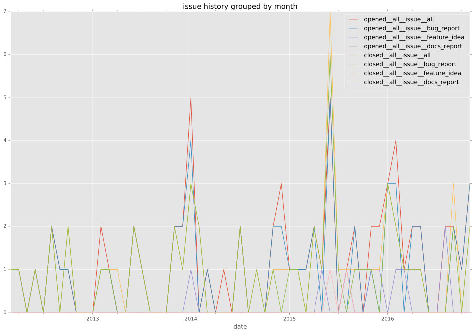
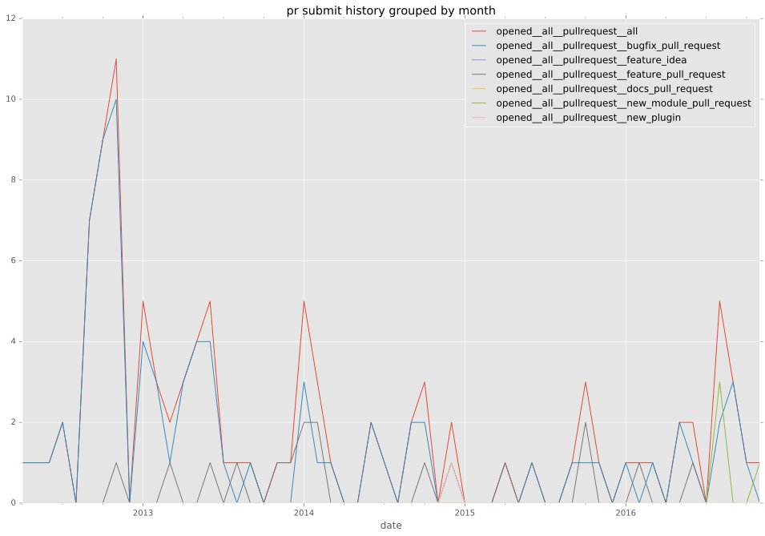
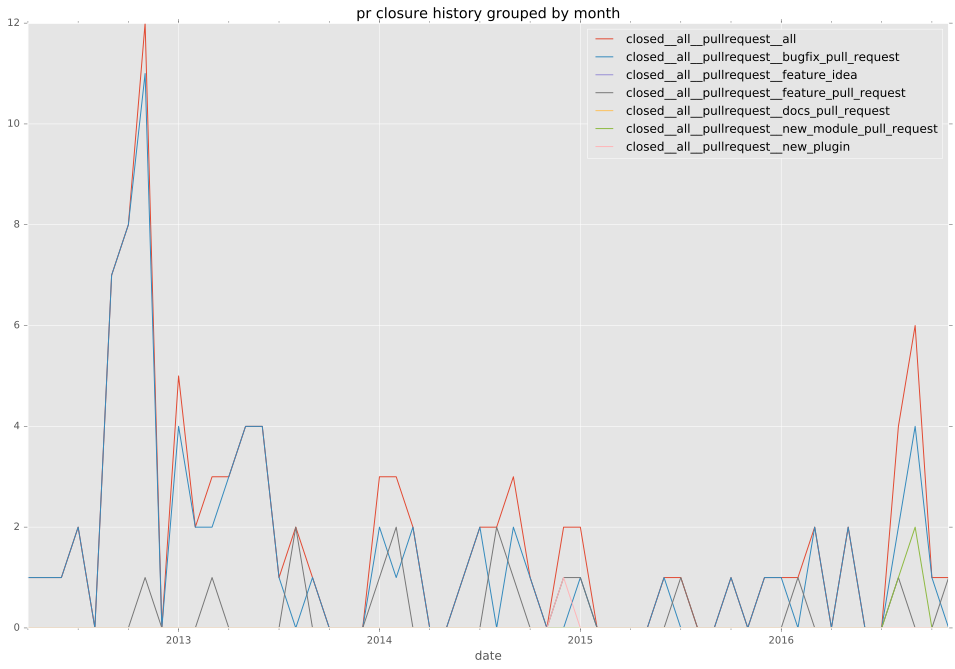
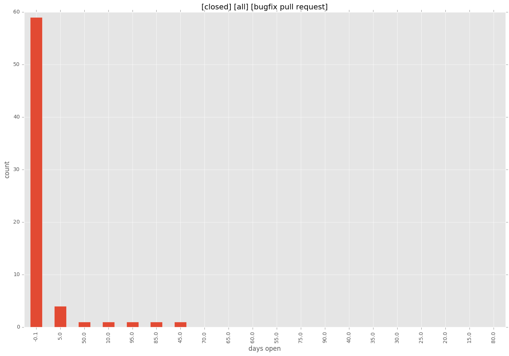
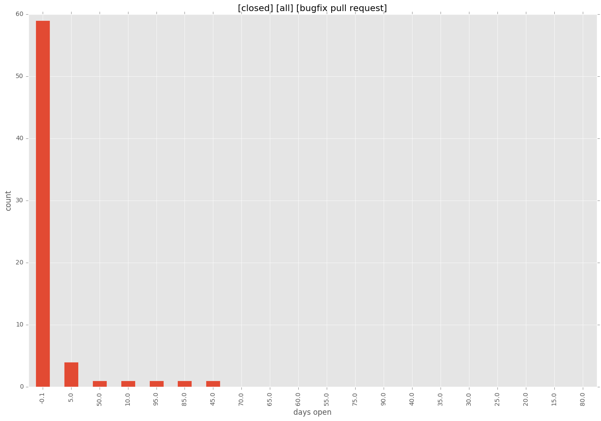

total issue counts
unknown: 2
feature pull request: 19
docs report: 1
pullrequest: 90
docs pull request: 1
bugfix pull request: 69
feature idea: 11
issue: 65
bug report: 52
issue history

pullrequest history


days open by issue type
bugfix pull request
count: 100
std: 19.7224657831
min: 0
max: 100
median: 0.0
mean: 5.79
all
count: 180
std: 60.7490395813
min: 0
max: 502
median: 0.0
mean: 19.6333333333
pullrequest
count: 0
std: nan
min: nan
max: nan
median: nan
mean: nan
docs pull request
count: 2
std: 0.0
min: 51
max: 51
median: 51.0
mean: 51.0
docs report
count: 1
std: nan
min: 2
max: 2
median: 2.0
mean: 2.0
feature pull request
count: 24
std: 92.9740399329
min: 0
max: 263
median: 0.0
mean: 55.7916666667
feature idea
count: 3
std: 289.541591716
min: 0
max: 502
median: 1.0
mean: 167.666666667
issue
count: 0
std: nan
min: nan
max: nan
median: nan
mean: nan
bug report
count: 48
std: 53.8088948327
min: 0
max: 228
median: 0.0
mean: 20.0833333333
closures grouped by total days open
 
